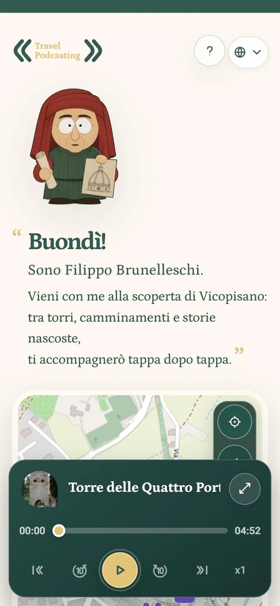
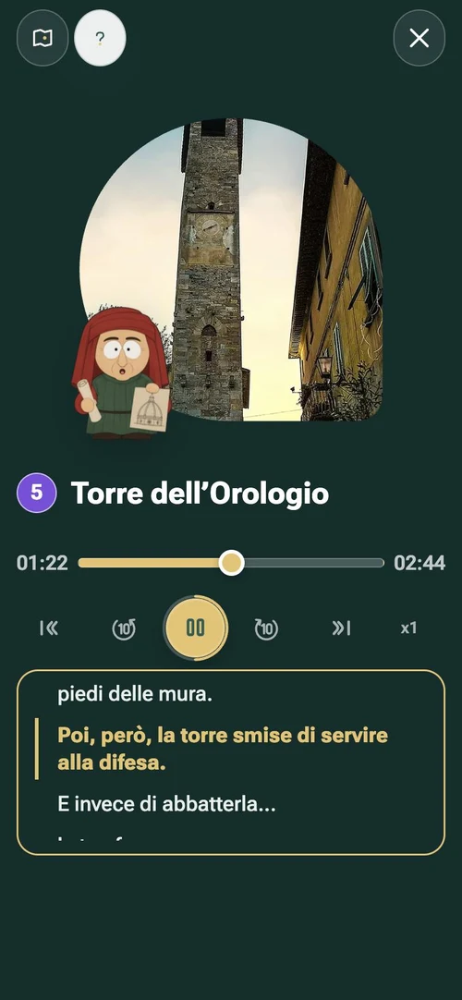

75%
dei turisti visita solo il 4% dell'Italia.
I borghi restano fuori dai percorsi più battuti. Una storia raccontata sul posto dà un motivo per fermarsi.
The European House – Ambrosetti (TEHA Group), su dati ISTAT 2022.
Storie digitali per i luoghi
Percorsi audio che raccontano un borgo mentre lo si attraversa. Si aprono dal telefono, senza app: il visitatore sceglie la lingua, tocca una tappa sulla mappa e ascolta il racconto mentre cammina. Per i Comuni che vogliono far ascoltare le proprie storie.
Come funziona



Il problema
75%
dei turisti visita solo il 4% dell'Italia.
I borghi restano fuori dai percorsi più battuti. Una storia raccontata sul posto dà un motivo per fermarsi.
The European House – Ambrosetti (TEHA Group), su dati ISTAT 2022.
4 su 5
persone al mondo non parlano né italiano né inglese.
I cartelli solo in italiano e in inglese non bastano: per farsi capire serve la lingua di chi arriva.
Ethnologue; Banca Mondiale (popolazione 2025).
Un esempio da ascoltare
70+ lingue
Benvenuti a Vicopisano
Ingegneria gestionale · Scienze della comunicazione
Ricercatore all'Università di Pisa. Lavora come freelance in copywriting e formazione sull'intelligenza artificiale.

Allievo Ordinario alla Scuola Superiore Sant'Anna
È stato a INNOVIT, a San Francisco. Ha ideato NExTerritorio.
Il prossimo passo
Lasciate un contatto: vi scriviamo noi, con il link alle demo.